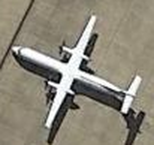
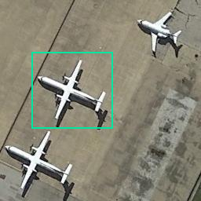
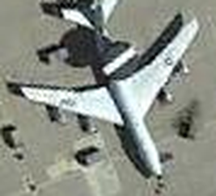
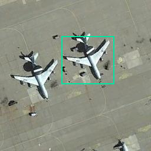
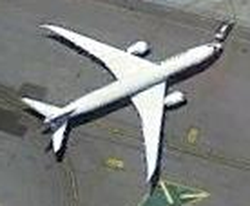
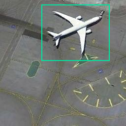
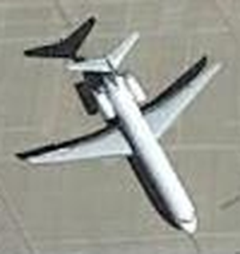
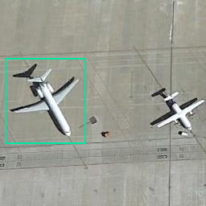
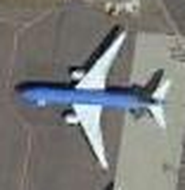
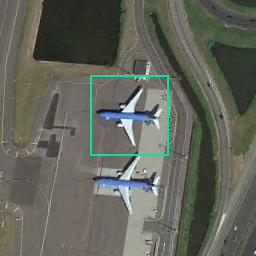

airplane_001

滑块左侧：所选模型；右侧：双三次插值。两侧来自同一个低清输入，完整飞机区域一致。
查看整个画面和原始输入

对同一画面依次生成16、20、24、32、48、64像素六档输入，全部仍用固定20倍模型。比较原模型、按原生20像素验证集选出的微调模型和双三次插值。现有独立测试集60个来源分别测试干净与模糊噪声输入；NWPU-RESISC45飞机类别700张全部测试干净输入。
网页只展示提前固定的5张公开样本，指标来自全部指定样本。各档模型输出先统一到同一参考网格用于评分，这是一项受控降采样实验，不能把结果直接解释成真实传感器的米级分辨率下限。飞机在整幅图中的占比也会影响结果。
在本轮受控降采样中，16～20像素整图输入的评分虽有改善，五张展示样本仍主要是模糊形状，不能可靠看清细节。32像素开始较容易辨认整体飞机轮廓，48～64像素的机身、机翼轮廓改善更明显，适合作为下一步重点研究范围；发动机、尾翼等仍可能融合或变形。700张公开飞机中，微调模型从32像素起连续满足项目数值筛选，原模型从24像素起满足；内部60来源的干净输入，两者都到48、64像素才满足。因此不能认定存在统一的24或32像素下限。
这里的尺寸指整幅输入，飞机实际只占其中一部分。五张示例在64像素整图中，飞机近似包围框也只有约17～30像素宽。48～64是本轮值得继续验证的区间，不是保证清晰的门槛，更不是20倍真实光学细节恢复。公开700张只测试了受控双三次降采样；真实传感器噪声、模糊和压缩可能更难。当前原模型与微调模型视觉上接近；干净输入下原模型的平均PSNR略高，不能宣称微调全面胜出。
左图：恢复质量随输入尺寸变化。右图：模型相对普通插值的增益，零线以上才是像素指标改善，阴影为逐档图像bootstrap 95%区间。
| 输入尺寸 | 模型 | PSNR变化与95%区间 / dB | SSIM变化 | PSNR胜率 | 边缘误差变化 越低越好 | 项目数值筛选 |
|---|
数值筛选是本项目预先确定的约定：平均增益至少0.2dB和0.005 SSIM，两个增益区间下界大于0，PSNR胜率至少70%，边缘误差不变差。满足它仍不等于视觉细节真实恢复。区间未做多重比较校正，公开图片也可能来自相近地理场景；全画面指标可能受背景主导。
绿色框和细节区域沿用先前确定的完整飞机范围。Gong Cheng、Junwei Han、Xiaoqiang Lu；Remote Sensing Image Scene Classification: Benchmark and State of the Art，Proceedings of the IEEE，2017。 数据来源；CC BY-NC 4.0，仅供非商业研究展示。参考图为该数据集的256×256原图，不是另外拍摄的更高分辨率真值。

滑块左侧：所选模型；右侧：双三次插值。两侧来自同一个低清输入，完整飞机区域一致。


滑块左侧：所选模型；右侧：双三次插值。两侧来自同一个低清输入，完整飞机区域一致。


滑块左侧：所选模型；右侧：双三次插值。两侧来自同一个低清输入，完整飞机区域一致。


滑块左侧：所选模型；右侧：双三次插值。两侧来自同一个低清输入，完整飞机区域一致。


滑块左侧：所选模型；右侧：双三次插值。两侧来自同一个低清输入，完整飞机区域一致。
